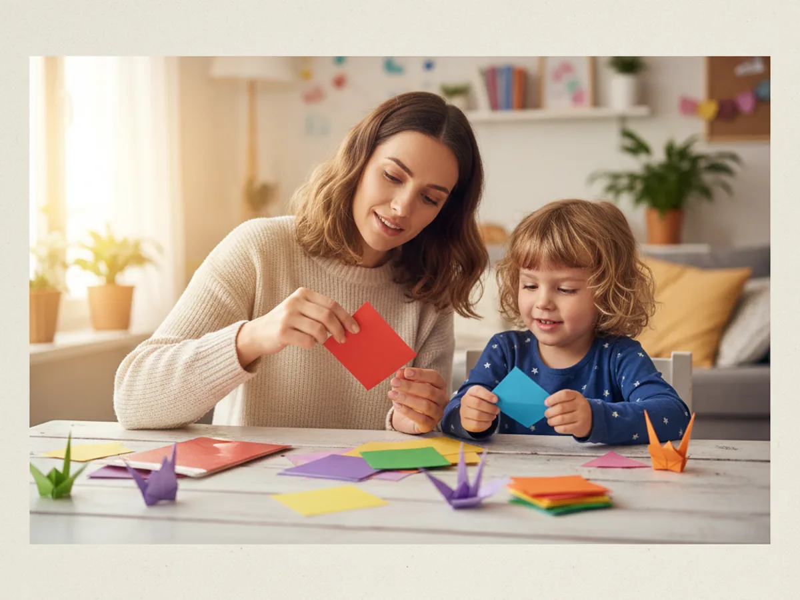
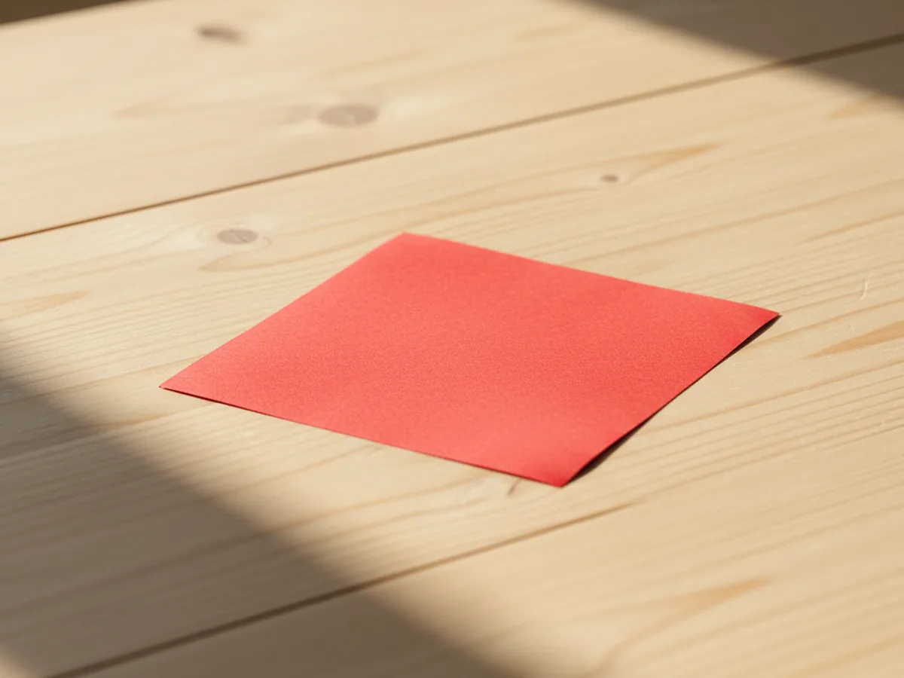
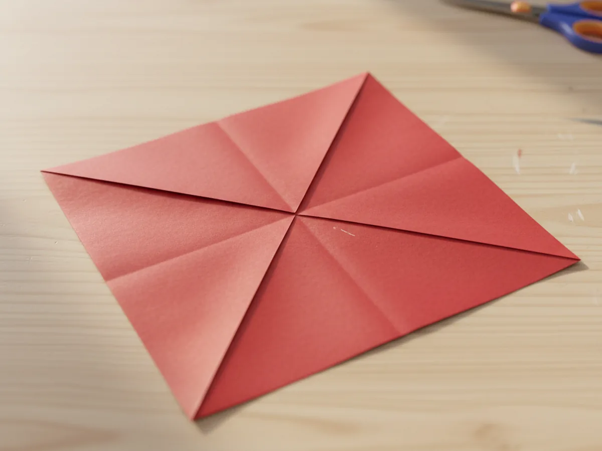
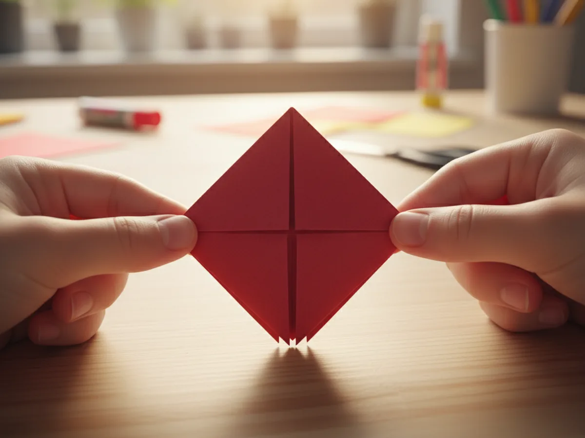
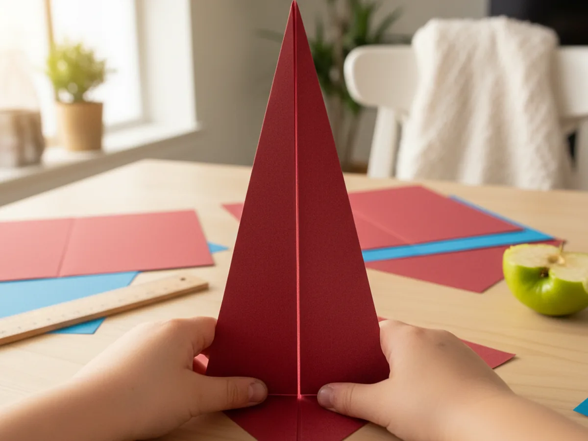
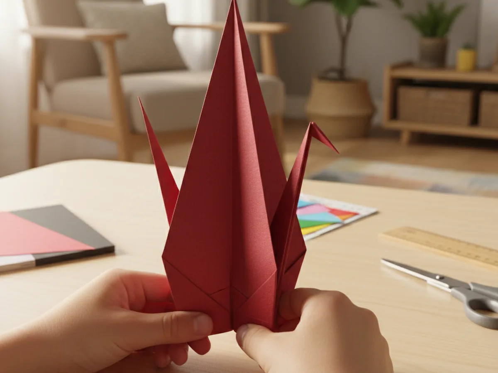
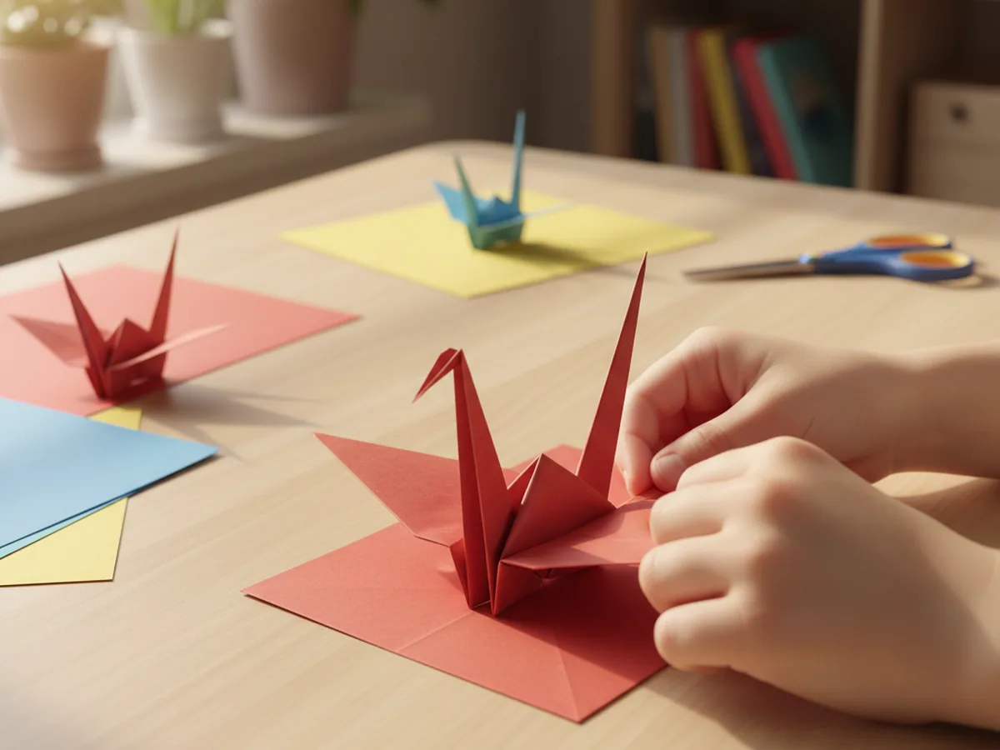
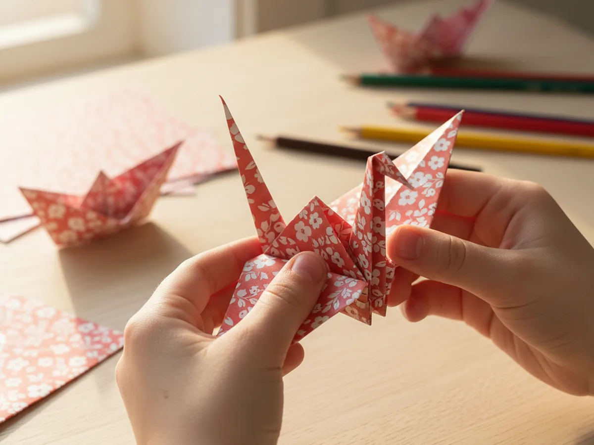

There is something almost magical about watching a flat square of paper slowly become a delicate origami crane right before your child's eyes. This classic origami paper craft has been bringing families together for centuries, and once you make one together you will completely understand why. The finished crane looks beautiful displayed on a shelf, hung from a window, or given as a heartfelt little gift. And the best part? You need exactly one thing to get started: a square of paper.
This tutorial walks you through a beginner-friendly version of the traditional paper crane step by step, with clear instructions designed for moms and kids working as a team. No origami experience needed at all.
Why Kids Love This Craft
Origami captivates children in a way that very few other crafts can match. Unlike painting or cutting, there is no glue, no mess, and nothing to clean up when you are done. Just paper, fingers, and a sequence of folds that slowly reveals something completely surprising. That element of discovery keeps kids engaged from the very first crease all the way to the moment the wings spread open.
This origami paper craft is also wonderful for building real focus and patience. Each fold depends on the one before it, so children experience genuine satisfaction with every single step. When the crane is finally finished, the pride they feel is enormous because they know they built something beautiful through careful, precise work. That is a feeling worth chasing again and again.
From a developmental standpoint, folding paper is exceptional for fine motor skills. Aligning edges, pressing creases flat, and applying gentle control are exactly the same skills children practice when learning to write, tie their shoes, or button a shirt. Origami turns that fine motor practice into pure, joyful play. Younger children under five may need you to do most of the folding while they help press creases down. Kids aged six and up can often follow each step quite independently once you demonstrate it first.

What You'll Need
Good news: this origami paper craft needs almost no supplies at all.
- Origami paper, double-sided color, 6x6 inch squares are the easiest size to start with
- Bone folder, optional but makes every crease crisper and more precise
- Pencil, optional for marking the starting corner if your child finds it helpful
Step-by-Step Instructions
Ready to begin? Take it one fold at a time and you will get there together. Let your child work on their own sheet alongside you as you demonstrate each step on yours.
Step 1: Prepare Your Paper Square
Place one sheet of origami paper on a flat surface with the colored side facing down. Origami paper comes pre-cut into perfect squares, which makes this step simple. If you are using regular printing paper, fold one corner down to the opposite edge to find the square shape, crease it, cut off the excess strip, and unfold. Take a moment to run a finger along each edge so your child can feel that it is a true square before you begin folding.

Step 2: Fold the Diagonal Creases
Fold the paper in half diagonally by bringing one corner to meet the opposite corner. Press the fold down firmly along the full length of the crease, then unfold it flat. Rotate the square and fold diagonally the other way, then unfold again. You should now see a clear X of crease lines crossing the center of the paper. These marks will guide nearly every fold that follows, so press them as crisp and flat as you can.

Step 3: Collapse into the Square Base
Flip the paper over so the plain side faces up. Fold in half horizontally like closing a book, press firmly, then unfold. Fold in half vertically, press firmly, then unfold. Now hold the paper up with the X creases facing you and gently push all four corners inward toward the center at the same time. The paper will fold naturally into a small flat square with the open flap edges pointing downward. This is called the square base, and it is the foundation of the whole origami paper crane.

Step 4: Fold the Edges to Center
Hold the square base with the open flap edges pointing downward toward you. Take the two outer edges of the top layer only and fold them inward to meet at the center crease line. Press both folds flat. Then fold the top triangle point down over those two folds and press flat. Flip the whole model over and repeat the exact same three folds on the other side. When you are done, you will have a narrow upright diamond shape with the open flap edges still pointing down.

Step 5: Open the Petal Fold
Unfold the three folds you just made on the top layer only, opening them back out flat. Now lift the single bottom point of the top layer straight upward. As you do, gently press the side edges inward along the existing crease lines. The paper will open outward and then fold up into a long, narrow diamond shape pointing upward. Press everything flat. Flip the entire model over and repeat this same petal fold on the back side. Your model should now look like a tall, narrow diamond from both the front and the back.

Step 6: Shape the Neck and Tail
With both petal folds complete, fold the two lower flaps of the front layer up toward the top center of the model, one on each side, pressing them flat. Flip the model over and repeat the same folds on the back. You now have a very narrow shape with two long thin points reaching up at the top. Take one of those long points and fold it outward at a slight angle to become the neck of the crane. Leave the other point straight as the tail. The angle you give the neck is what creates the crane's elegant, life-like posture.

Step 7: Finish the Crane and Open the Wings
Fold the very tip of the neck point downward to form the small head of the crane. Now hold the model gently with one hand on the neck and one hand on the tail, and slowly pull them apart from the inside. You will feel the body begin to puff out and the wings spread open on both sides. Keep pulling gently until the crane takes its final three-dimensional shape. Hold it up together and admire what you just made. Your beautiful origami paper crane is complete. 🕊️

Variations to Try
Patterned Paper Crane: Swap solid-color origami paper for scrapbook paper, wrapping paper, or even pages torn from an old magazine with interesting patterns. Printed textures add a whole new layer of character to the finished bird, and every crane ends up completely one of a kind. This version makes a particularly lovely handmade gift.
The Wishing Crane: Before you begin folding, use a pencil to write a secret wish on the blank side of the paper. In Japanese tradition, folding 1,000 cranes is said to grant a wish. Even making just one crane with a wish tucked inside feels meaningful and a little magical, especially for older kids who love the idea of a hidden message inside their craft.
Simple Origami Boat for Little Ones: If you have younger children who find the crane too challenging for now, try stopping after Step 3 and opening the square base differently to form a simple paper boat instead. It uses the same beginning folds in a simpler format, and kids are absolutely delighted to float a boat they folded themselves in a tray of water.
Final Thoughts
Making an origami paper craft together is one of those quiet, focused activities that can turn into a skill your child carries with them for life. The first crane will probably be a little lopsided, and that is entirely okay. Celebrate every fold, keep the finished crane somewhere visible, and enjoy the conversation that happens as you work side by side. With a little practice, your child will soon be making cranes for grandparents, teachers, and friends, and each one will feel like a small act of care. There is so much heart in a tiny folded bird made by a child's own hands. 🌟
More Crafts You'll Love
If you enjoyed this origami paper craft, these two are just as satisfying to make together.